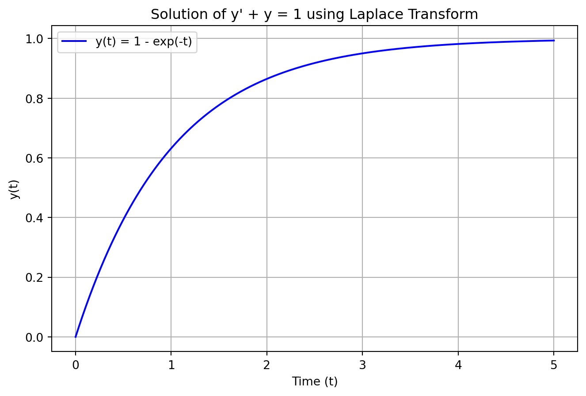

Code
import sympy as sp
import numpy as np
import matplotlib.pyplot as plt
# --- 1. Define Symbols and the ODE ---
t = sp.Symbol('t', positive=True)
s = sp.Symbol('s')
y = sp.Function('y')
# Define the differential equation: y'(t) + y(t) - 1 = 0
ode = y(t).diff(t) + y(t) - 1
# --- 2. Solve directly using SymPy's dsolve with Laplace method ---
# This automates the transform, solve, and inverse transform steps.
# We provide the initial condition y(0)=0 via the 'ics' argument.
solution = sp.dsolve(ode, ics={y(0): 0})
# Display the symbolic solution
print("The symbolic solution is:")
display(solution)
y_t = solution.rhs # Extract the right-hand side for plotting
# --- 3. Visualize the Solution ---
# Convert the symbolic solution into a numerical function for plotting
y_func = sp.lambdify(t, y_t, modules=['numpy'])
# Generate time values for the plot
t_vals = np.linspace(0, 5, 400)
y_vals = y_func(t_vals)
# Plot the result
plt.figure(figsize=(8, 5))
plt.plot(t_vals, y_vals, label=f"y(t) = {y_t}", color='blue')
plt.title("Solution of y' + y = 1 using Laplace Transform")
plt.xlabel("Time (t)")
plt.ylabel("y(t)")
plt.grid(True)
plt.legend()
plt.show()The symbolic solution is:\(\displaystyle y{\left(t \right)} = 1 - e^{- t}\)
